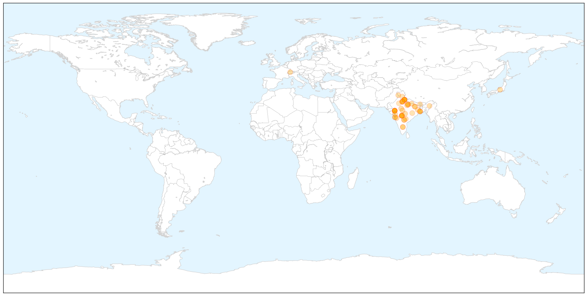

Swine Flu
30-Day Web Trend
11 alerts, 8 warnings

30-Day Twitter Trend
0 alerts, 0 warnings

Article Locations

X

Article Confidences

Top Articles:
- 1.000
- Swine flu: Will assure all help to state governments, says JP Nadda
- 1.000
- Three cases test positive for swine flu
- 1.000
- Gujarat junior health minister tests positive for swine flu
- 1.000
- Indian City Bans Gatherings Over Swine Flu Outbreak
- 0.999
- 21 more deaths take swine flu death toll to 833
- 0.999
- Minister for health being treated at a special isolation room created at his residence: Gujarat
- 0.999
- India's Ahmedabad bans gatherings over swine flu outbreak, South Asia News & Top Stories
- 0.999
- State takes extra precautionary steps towards swine flu
- 0.999
- 214 Swine Flu Deaths In Rajasthan Alone
- 0.999
- 841 deaths due to swine flu, matter of great concern
- 0.999
- Swine flu toll rises to 841 in less than 2 months
- 0.999
- Indian city bans gatherings over swine flu outbreak
- 0.999
- Indian city bans gatherings over swine flu outbreak
- 0.999
- Here’s how you can manage Swine flu in Bengaluru: Akshatha M
- 0.998
- JP Nadda to make statement in Parliament on swine flu
- 0.998
- Indiablooms - First Portal on Digital News Management
- 0.997
- Flu rap on four big hospitals
- 0.997
- Nine fresh cases of swine flu in Telangana
- 0.997
- One death and record 66 new cases of swine flu in city
- 0.996
- Nine fresh cases of swine flu in Telangana
- 0.996
- Swine flu claims one more life, death toll reaches 100 in state
- 0.995
- Mamata wants swine flu test lab in Kolkata, Dooars
- 0.994
- J&K witnesses huge number of positive cases of swine flu
- 0.993
- Swine flu in Ahmedabad: Government bans people from gathering in large groups
- 0.993
- Health desks set up at border points
- 0.993
- No H1N1 vaccinations for Vashi civic hospital staffers yet
- 0.992
- Doctor admitted in critical condition, swine flu suspected
- 0.992
- State under watch for swine flu
- 0.992
- Mirwaiz castigates state health department
- 0.991
- Six more swine flu victims die in MP, toll reaches over 123
- 0.989
- Swine flu cases rise to 34 in Ghaziabad
- 0.988
- No swine flu death reported in Maharashtra on Monday
- 0.985
- No need to vaccinate people against swine flu: Nadda
- 0.985
- Focus on sequencing of swine flu virus: immunology expert
- 0.984
- Govt show-causes pvt hospitals for refusing treatment
- 0.981
- No need to vaccinate people against swine flu: Nadda
- 0.981
- No need to vaccinate people against swine flu: Nadda
- 0.981
- No need to vaccinate people against swine flu: Nadda
- 0.981
- No need to vaccinate people against swine flu: Nadda
- 0.979
- Swine flu death toll reaches 51
- 0.977
- 350 swine flu cases in UP, death toll mounts to 10
- 0.972
- 4 more die of swine flu in Maha, toll climbs to 103
- 0.969
- Third swine flu case confirmed in Nagaland
- 0.968
- 841 deaths due to swine flu, matter of great concern: Govt
- 0.965
- Senior doctor admitted for suspected swine flu
- 0.961
- Expert urges India to sequence swine flu virus
- 0.958
- Swine flu: No need to vaccinate people against the disease, says Health Minister J P Nadda
- 0.954
- Sequence H1N1 virus in India: expert
- 0.952
- No cause for swine flu panic, says Bengal government
- 0.939
- 11 new cases of swine flu detected in WB
Showing top 50 articles...
Top Tweets:
-
No tweets found for Feb 24, 2015